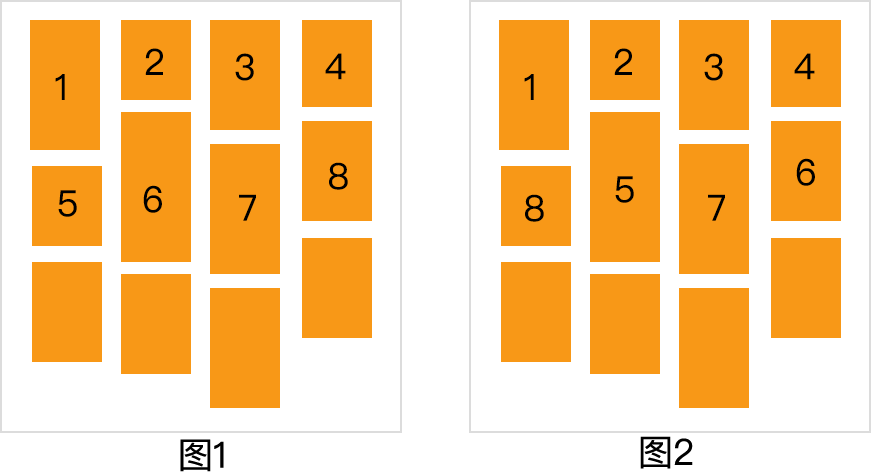
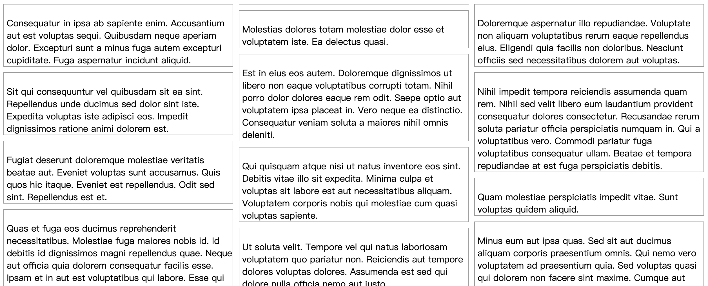
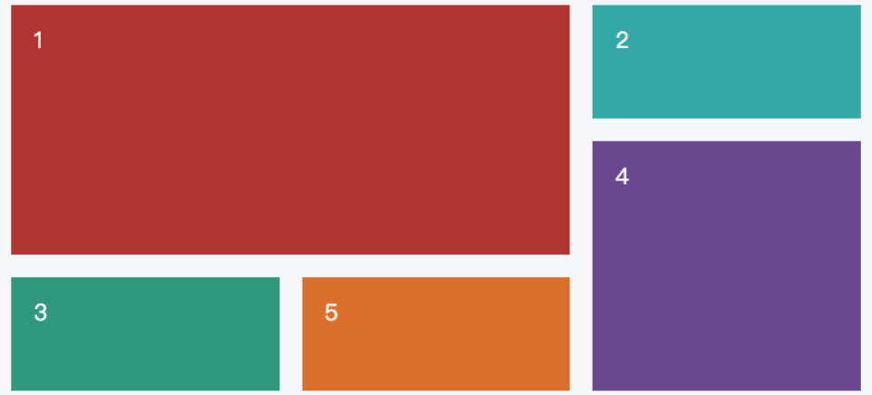
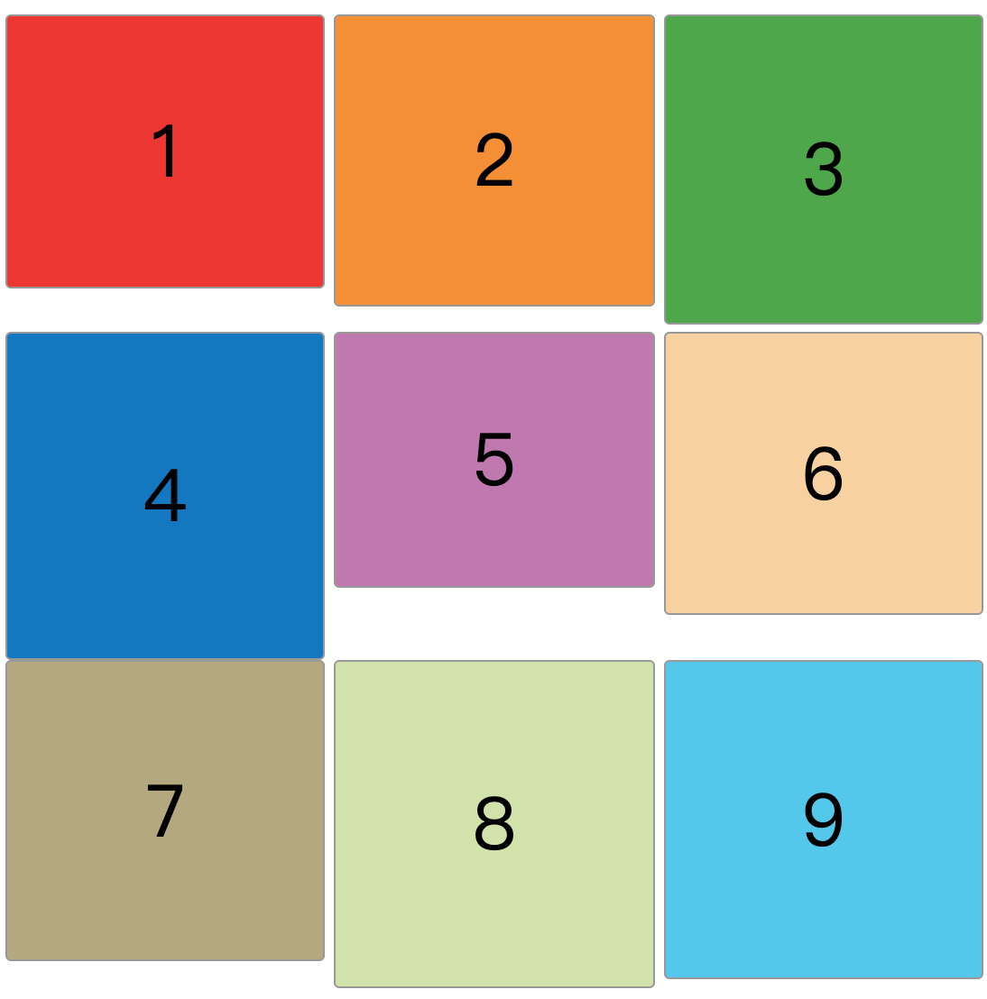

瀑布流布局
前言
本人平时学习及收集内容，欢迎参入一起讨论。
内容
一、什么是瀑布流布局
瀑布流又称瀑布流式布局，是一种比较流行的页面布局方式，专业的英文名称为Masonry Layouts。与传统的分页显示不同，视觉表现为参差不齐的多栏布局。
二、瀑布流的实现原理
瀑布流本质上就是寻找之中高度最小的一列，并将新的元素添加到该列后面，只要有新的元素需要排列，就继续寻找所有列中的高度最小列，把后来的元素添加到高度最小列上。
2.1 图解基础瀑布流
我们看下为什么要永远寻找最小列？
先看图 1 的排列顺序，第一排元素的顶部会处于同一个高度，依次排列在顶端，第一排排满之后，第二排从左往右排列。然而这种排列方式很容易出现其中一列过长或其中一列过短的情况。
为了解决图 1 中列可能过长或者过短的问题，我们按照图 2 的方式将元素放在最短的一列进行排列。

三、瀑布流的优缺点
3.1 优点
- 节省空间，外表美观，更有艺术性。
- 对于触屏设备非常友好，通过向上滑动浏览
- 用户浏览时的观赏和思维不容易被打断，留存更容易。
3.2 缺点
- 用户无法了解内容总长度，对内容没有宏观掌控。
- 用户无法了解现在所处的具体位置，不知道离终点还有多远。
- 回溯时不容易定位到之前看到的内容。
- 容易造成页面加载的负荷。
- 容易造成用户浏览的疲劳，没有短暂的休息时间。
四、瀑布流的适用场景
根据瀑布流的优缺点，我们不难得出在什么情况下选择瀑布是合理的选择：
- 内容以图片为主的时候，瀑布流是更好的选择。图片占用空间比较大，并且大脑理解的速度相比理解文字要快，短时间内可以扫过的内容很多，所以如果用分页显示的话用户务必会频繁的翻页，影响沉浸式的体验，而瀑布流可以解决这个问题
- 信息与信息之间相对独立时，瀑布流是更好的选择。如果信息关联性强，用户务必会进行大量的回溯操作去查看之前或者之后的信息，相反，如果信息相对独立的话，可以使用瀑布流，让用户同时接受来自不同地方的信息。
- 信息与搜索匹配比较模糊时，瀑布流是更好的选择，瀑布流给人的直观印象，就是同时显示的信息与用户搜索的匹配度大致一样，而分页显示的直观印象则是越靠上的信息被认为与用户的搜索越匹配。因此，当信息与搜索匹配度没有明显区分度时，可以采用瀑布流。
- 用户目的不强的时候，瀑布流是更好的选择。如果用户有特定需要查找的信息，分页查找定位更方便，而当目的性较弱的时候，瀑布流可以增加用户停留的时间和意想不到的收获。
五、几种常用的瀑布流布局
- multi-column
- grid 布局
- Flexbox 布局
5.1 multi-column
multi-column实现瀑布流主要依赖以下几个属性：
column-count：设置共有几列column-width：设置每列宽度，列数由总宽度与每列宽度计算得出colunm-gap：设置列与列之间的间距
column-count和column-width都可以用来定义分栏的数目，而且并没有明确的优先级之分。优先级的计算取决与具体的场景。
计算方式为：计算column-count 和 column-width 转换后具体的列数，哪个小就用哪个。
具体代码如下：
CSS 代码
.masonry {
column-count: 3;
column-gap: 10px;
padding: 10px;
}
.masonry .item {
border: 1px solid #999;
margin-bottom: 10px;
}
.masonry .item img {
width: 100%;
vertical-align: middle;
}
.masonry .item .title {
display: block;
margin-left: 5px;
}
2
3
4
5
6
7
8
9
10
11
12
13
14
15
16
17
18
19
20
HTML 代码
<div class="masonry">
<div class="item"><img src="https://i.pinimg.com/236x/7f/24/8c/7f248c9e18abe79de0d6c79617e03361.jpg"><span
class="title">Consequatur in ipsa ab sapiente enim. Accusantium aut est voluptas sequi. Quibusdam neque
aperiam dolor. Excepturi sunt a minus fuga autem excepturi cupiditate. Fuga aspernatur incidunt
aliquid.</span></div>
<div class="item"><img src="https://i.pinimg.com/236x/a6/cd/0a/a6cd0a15d5b2909539dd7944201127d2.jpg"><span
class="title">Sit qui consequuntur vel quibusdam sit ea sint. Repellendus unde ducimus sed dolor sint
iste. Expedita voluptas iste adipisci eos. Impedit dignissimos ratione animi dolorem est.</span></div>
<div class="item"><img src="https://i.pinimg.com/236x/d7/fb/60/d7fb60b2321149a83ab5dbe94744ced6.jpg"><span
class="title">Fugiat deserunt doloremque molestiae veritatis beatae aut. Eveniet voluptas sunt
accusamus. Quis quos hic itaque. Eveniet est repellendus. Odit sed sint. Repellendus est et.</span>
</div>
</div>
2
3
4
5
6
7
8
9
10
11
12
13
效果

我们可以看到，虽然实现了瀑布流的效果，但奇怪的是例子中前两列的最后一个元素的文本内容被自动断开，一部分在当前列尾，一部分在下一列的列头。
这种展示方式是我们不希望看到的，我们希望的是每个元素都是独立的，前后不断开，此时我们需要使用break-inside来实现。
break-inside:auto | avoid
- auto：元素可以中断
- avoid：元素不能中断
效果实现了，但由于multi-column布局中子元素排列顺序是先从上往下再从左至右，所以这种方式仅适用于数据固定不变的情况，对于滚动加载更多等可动态添加数据的情况就并不适用了。
5.2 grid 布局
Grid布局是最强大的 CSS 布局方案。关于Grid布局可以详情参考Grid 布局
它将网页划分成一个个网格，可以做生意组合不同的网格，做出各种各样的布局。以前，只能通过复杂的 CSS 框架达到的效果，现在浏览器内置了。

上图这样的布局，就是 Grid 布局的拿手好戏，因此，我们就可以用Grid来实现瀑布流。
为实现瀑布流先介绍以下几个属性：
display：设置为grid指明当前容器为Grid布局grid-template-columns：定义每一列的列宽grid-template-rows：定义每一行的行高column-gap：用于设置画列间距
grid-template-columns和grid-template-rows，可以使用绝对单位，也可以使用百分比。并且为了表示比例关系，Grid布局提供了fr关键字，如果设置1fr和2fr，表示后者是前者的两倍。
HTML 代码
<div class="masonry">
<div class="item">1</div>
<div class="item">2</div>
<div class="item">3</div>
<div class="item">4</div>
<div class="item">5</div>
<div class="item">6</div>
<div class="item">7</div>
<div class="item">8</div>
<div class="item">9</div>
</div>
2
3
4
5
6
7
8
9
10
11
CSS 代码
.masonry {
display: grid;
grid-template-rows: 1fr 1fr 1fr;
grid-template-columns: 1fr 1fr 1fr;
column-gap: 5px;
height: 540px;
}
.masonry .item {
display: flex;
justify-content: center;
align-items: center;
border-radius: 3px;
border: 1px solid #999;
font-size: 40px;
}
.masonry .item:nth-child(1) {
height: 150px;
background-color: #ef3429;
}
.masonry .item:nth-child(2) {
height: 160px;
background-color: #f68f25;
}
.masonry .item:nth-child(3) {
height: 170px;
background-color: #4ba846;
}
.masonry .item:nth-child(4) {
height: 180px;
background-color: #0476c2;
}
.masonry .item:nth-child(5) {
height: 140px;
background-color: #c077af;
}
.masonry .item:nth-child(6) {
height: 155px;
background-color: #f8d29d;
}
.masonry .item:nth-child(7) {
height: 165px;
background-color: #b4a87f;
}
.masonry .item:nth-child(8) {
height: 180px;
background-color: #d0e4a8;
}
.masonry .item:nth-child(9) {
height: 175px;
background-color: #4dc7ec;
}
2
3
4
5
6
7
8
9
10
11
12
13
14
15
16
17
18
19
20
21
22
23
24
25
26
27
28
29
30
31
32
33
34
35
36
37
38
39
40
41
42
43
44
45
46
47
48
49
50
51
52
53
54
55
56
57
58
59
60
61
效果

我们看到高度不同的 div 块分布在每一个单元格内，但没有实现瀑布流的效果。
为实现瀑布流再介绍几个属性：
grid-row-start：上边框所在的水平网格线grid-row-end：下边框所在的水平网格线grid-column-start：左边框所在的垂平网格线grid-column-end：右边框所在的垂平网格线
上面 4 个属性可接收如下值：
auto：表示自动放置自定义名称：可以给予网格线一个名称，并在此处引用网格线索引：代表第几条网格线span+数字：表示上下边框或左右跨越多少网格
实际情况中，瀑布流更多的是为图片展示而服务的，花前月下由于图片是异步请求加载，只有在加载完成后才能获取图片的真实宽高，所以不得不使用 JS 来动态将单元格高度进行拉伸。
伪代码如下：
// js 代码
let img = document.getElementsByTagName('img')[0];
//image-dom 当前宽度
let width = img.width;
let image = new Image();
image.src = 'xxxx.img';
image.onload = function(){
//图片原宽
let w = image.width;
//图片原高
let h = image.height;
//image-dom的真实高度(依据当前宽度及图片真实宽高)
let height = Math.round(h * width / w)
//设置当前跨越几个网格(每个网格10px)
img.style.gridRowEnd = `span ${~~(height/10)}`
}
// css 代码
.masonry{
display: grid;
grid-template-columns: 1fr 1fr 1fr; // 分为3列
column-gap: 5px; // 列间距5px
grid-auto-rows:10px;
}
.masonry .item{
grid-row-start: auto;
}
2
3
4
5
6
7
8
9
10
11
12
13
14
15
16
17
18
19
20
21
22
23
24
25
26
27
28
5.3 Flexbox 布局
FlexBox布局到今天已经是使用非常广泛，具体使用参考flex 学习
Flexbox怎么实现瀑布流布局。
HTML 代码结构
<div class="masonry">
<div class="colmun">
</div>
<div class="colmun">
</div>
<div class="colmun">
</div>
</div>
2
3
4
5
6
7
8
CSS 代码
.masonry{
display:flex; // 设置为Flex容器
flex-direction:row; // 主轴方向设置为水平方向
}
.masnory .column{
display: flex; // 设置为Flex容器
flex-direction: column; // 主轴方向设置为垂直方向
flex: 1;
padding: 0 2px;
}
.masnory .column .item{
margin-bottom: 5px;
width: 100%;
}
2
3
4
5
6
7
8
9
10
11
12
13
14
15
JS 代码
let data1 = [], //第一列
data2 = [], //第二列
data3 = [], //第三列
i = 0;
while (i < data.length) {
data1.push(data[i++]);
if (i < data.length) {
data2.push(data[i++]);
}
if (i < data.length) {
data3.push(data[i++]);
}
}
2
3
4
5
6
7
8
9
10
11
12
13
14
效果

总结
做瀑布流需要考虑几方面大因素，图片质量，图片大小，加载速度，如果这些不同时满足，会大大降低用户体验。
参考资料
联系作者
平凡世界，贵在坚持。